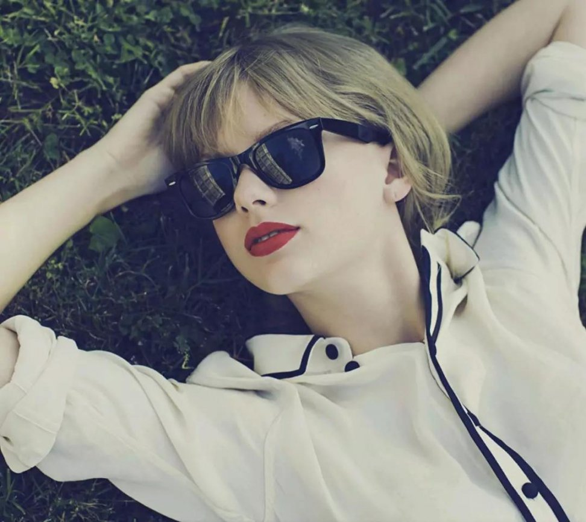
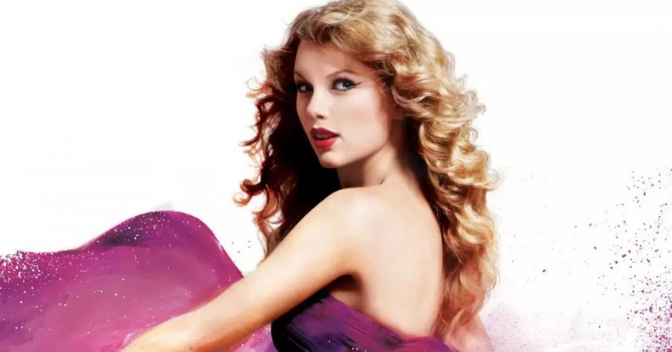
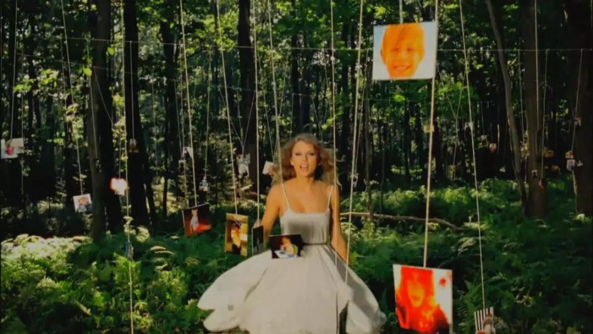
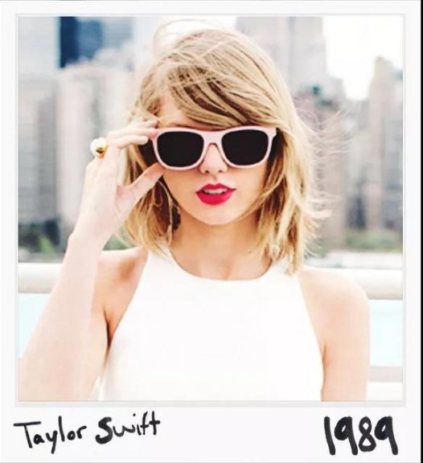
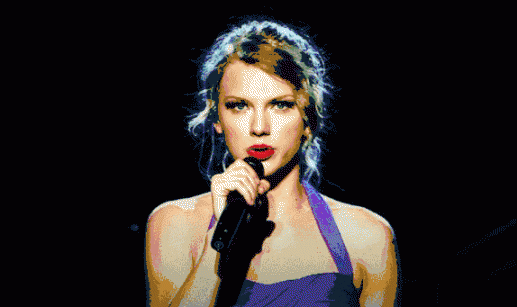
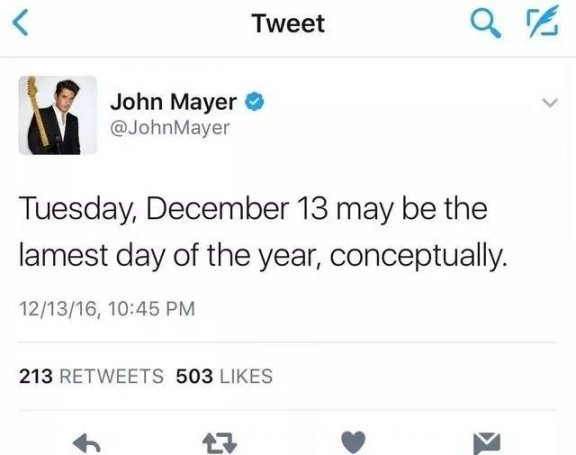
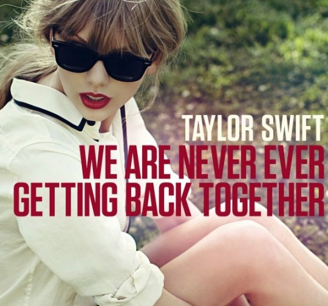
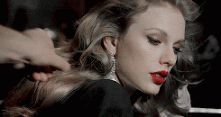

今年的早些时候，周杰伦演唱会上有一位自称“小仙女”的观众手撕前男友，获得很多人支持，当时还有人在问：“这种对前任不共戴天的恶语相向， 真的有那么多女性朋友觉得很有共鸣很想支持她吗？”对此我只想说……
朋友，你听说过Taylor Swift吗？你不知道她有多红吗？

毫无疑问，当你提及TS，“手撕前男友”绝对是她重要的标签之一。而她在辉煌的职业生涯中拿下的第一支Hot 100冠军单曲，正是诠释了手撕前男友有多爽。
然而曾几何时Taylor Swift还并不是如今在歌曲中怼天怼地的毒辣形象，出生在纳什维尔的她以乡村少女的形象出道，到了2010年推出第三张乡村专辑《Speak Now》的时候，21岁的她也早已红遍全美。

然而“红”和“巨星”之间仍是隔着千沟万壑，其中最宽阔一条就是：年轻的TS还没有任何一首billboard hot 100冠军单曲。在2012年之前，《You Belong With Me》和 《Today Was A Fairy tale》都曾冲到过亚军位置，前十单曲更是有10首之多。 但都始终阴差阳错拿不下冠单。正因为这不太理想的运气，当时中国的TS歌迷不无遗憾地称呼她为“小霉女”以感叹她是如此倒霉，这一称呼很快演化为了我们常用的“霉霉”并流传至今。

三专《Speak Now（爱的告白）》时期的TS开始在专辑中加入了一些带有进攻性的单曲，以《Mean（刻薄）》和《Dear John（亲爱的约翰）》为代表。这和前两张专辑所展现出的唯美可爱完全不同，以如今的角度回望， 这种转变所具备的意义完全不亚于她在《1989》时期对于纯Pop风格的皈依。
虽然《Dear John》并不是一首主打歌，在Hot 100上最高也只获得过54位，情况好一些的《Mean》也只是最终冲上了11位，在TS此时的歌曲里并不算非常成功，但值得注意的是，这两首歌在此后的巡演和各种现 场中都得到了非常精心的包装和曝光。这表示着TS和她的公司Big Machine（Taylor Swift所属唱片公司）开始意识到话题度的重要性。

自从2008年格莱美上表演《Fifteen（15岁）》气息和音准出现问题被同台的16岁的Miley Cyrus压制以来，TS的演唱一直遭受着评论家的白眼。而《Mean》就是为了回击这些恶评而创作的，而2012年格莱美上TS再度 来到这个曾经跌倒的舞台演唱了《Mean》并将歌词改成“有一天我会在格莱美唱这首歌，而你一辈子就只是刻薄。”出气度爆表。
而《Dear John》就更加耐人寻味。本身“Dear John”这个短语在英语中是代表了分手信的意思。但偏偏，TS在彼时刚刚分手的男友，是美国新一代的“吉他之神”John Mayer。 这就令人很有联想的空间了。然而这还不够，TS在歌词中写道：“是不是因为我才19岁，不能陪你玩那黑暗扭曲的游戏？”而唱完还要配套这样的表情：

此句一出，虽然没能令单曲排行上升，但却让所有的八卦小报都沸腾了。事实上TS的前两张专辑中也不乏《Tim McGraw》和《Forever & Always》这样关于前任的歌曲，但那时的 歌词口吻都是怀着怀恋和感谢去回想旧情，和如今的画风是完全不同的。
John Mayer本就是绯闻不少的歌手，TS的歌曲放出之后，大家都开始好奇他到底是怎样的“黑暗扭曲”了，一个渣男形象几乎铁板钉钉。此时的John Mayer正处于事业的低潮期，他在2012年接受《滚石》采访时生气地表示TS在那个时候 发布《Dear John》是在落井下石。这个仇他一直记到2016年都还没忘，那年12月13日（TS的生日），John Mayer还发推说“这是一年中最矬的一天。”

《Dear John》本身的词曲质量并不足以令它成为一首大热单曲，但毫无疑问，这样带些花边新闻的歌曲吸睛效果很强，这成为了一条值得参考的宝贵经验。但另一方面，虽然《Dear John》成功勾起了听众的好奇，但其本身的调性依然太过灰暗和哀怨，这在美国并不是一个十分受 到认可的情绪。而《Mean》这样长出一口恶气的释放感虽然爽快，但却没有人会特别想听音乐人和乐评人斗争的故事。那么，做一首综合了花边新闻和强力回怼这两大爽点的歌曲似乎就成了一条冲上云霄的隐约捷径。
总结经验后，TS在2012年的四专《Red》中推出了《We Are Never Ever Getting Back Together（我们永远不会再在一起了）》。

这对于TS来说是一首具有里程碑意义的作品，当我们再回顾这首歌的时候我们会发现它的词、曲和MV的诉求总结起来就是一个字“爽”。
随着这支广告和歌曲MV在2012年8月底的接连播出，《WANEGBT》自8月13日发布以来发酵了整个月的超强话题性终于取得了成果：9月1日的Hot 100榜单上，《WANEGBT》终于为TS摘下了第一个冠单荣耀。最终，《WANEGBT》 蝉联三周冠军并在hot 100上停留了24周之久。
有了零的突破，TS的冠单之路开始变得顺风顺水，到现在已经有了5首之多。成为Hot 100冠单最多的女歌手之一。而这首《We Are Never Ever Getting Back Together》所留下的创作思路更是贯穿了TS迄今的职业生涯。如今想来，这既是T S迈向传奇巨星的前奏，也是乡村时代那个“Old Taylor”死亡的开始吧。
